速览
做一个斗士，即使跨越多位负责人也要花相当长的时间：至少做一年以上，包括调整有时一直做到发售，负责员工投入的时间相当可观。但《大乱斗》的语音录制，每个斗士大约 1 小时就结束了；即使参战影片、剧情等有台词，也花不到 2 小时。参与时间很短，但声音会直接进入游戏，强烈地感到人的存在。讲讲这样的语音录制。首先是选角：谁来演。不过最近的游戏很多角色一开始就定了声优，常常不需要多想；尽量重视贴近原作，但系列新作等换了演员时，也有配合新演员的情况。其次写台本：他平常写文件都横排，但为配合一般台本体裁，竖排书写，连「哈」「嗯」这样的词也写成台词；攻击、跳跃、受伤等有一定规则的地方套用，必杀技、最终技、参战影片等有特色的地方另录；如果原作有同样台词，也会准备原作参考音源。《大乱斗》的台词整体偏短、频率偏低：战斗中的长台词、频繁说话等主张太强会降低沉浸感；另外他认为声音撞型不好，例如库巴和大金刚的声音保持兽性，也考虑了重复问题。和事务所沟通排好日程后，约录音室：《大乱斗 3DS/Wii U》和《特别版》有万代南梦宫工作室自有的录音室，比较方便，但有时要去别的录音室。然后录音：事先向声优简单说明、复认原作中的声音后，请进录音间开始；大部分由他直接用对讲按钮指导，视内容由该系列音响导演监督。海外语音以日本录制的声音为基础，由 NOA（任天堂美国）和 NOE（任天堂欧洲）主导；宝可梦等各国说的话不同，相当辛苦。意外的是录完后很辛苦：为了适合游戏反复编辑，这样完成进游戏的声音。也尽量让搭档一起录，以抓住角色间的默契，但日程合不上而分开录也常有。参与的声优很多，发生过各种事，但大多气氛良好。制作中他会一直反复听这些声音，但玩家听得也许比开发者还多——让人感到指导的责任。
1. 录制时间很短 0:03
做一个斗士，即使跨越多位负责人也要花相当长的时间：至少一年以上，包括调整有时一直做到发售。
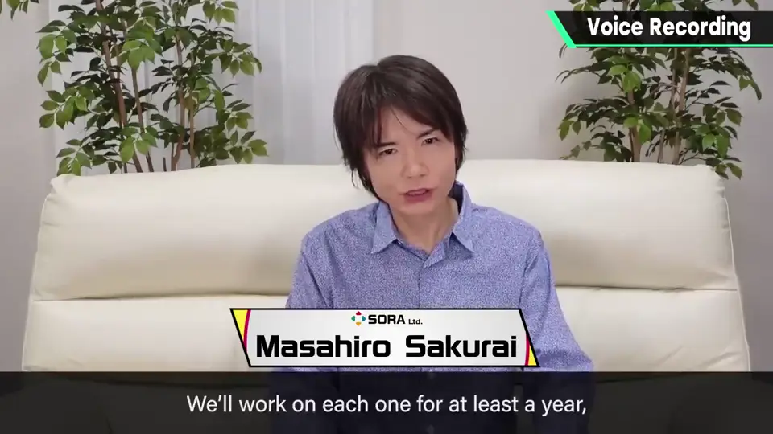
但《大乱斗》的语音录制，每个斗士大约 1 小时就结束了；即使参战影片、剧情等有台词，也花不到 2 小时。
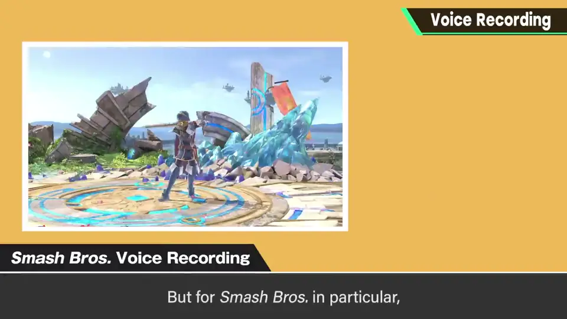
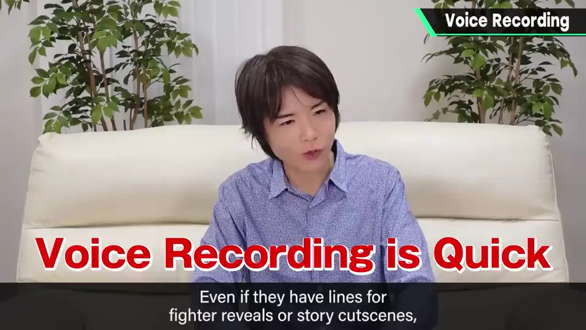
2. ① 选角 0:56
首先是选角：谁来演。不过最近的游戏很多角色一开始就定了声优，常常不需要多想。
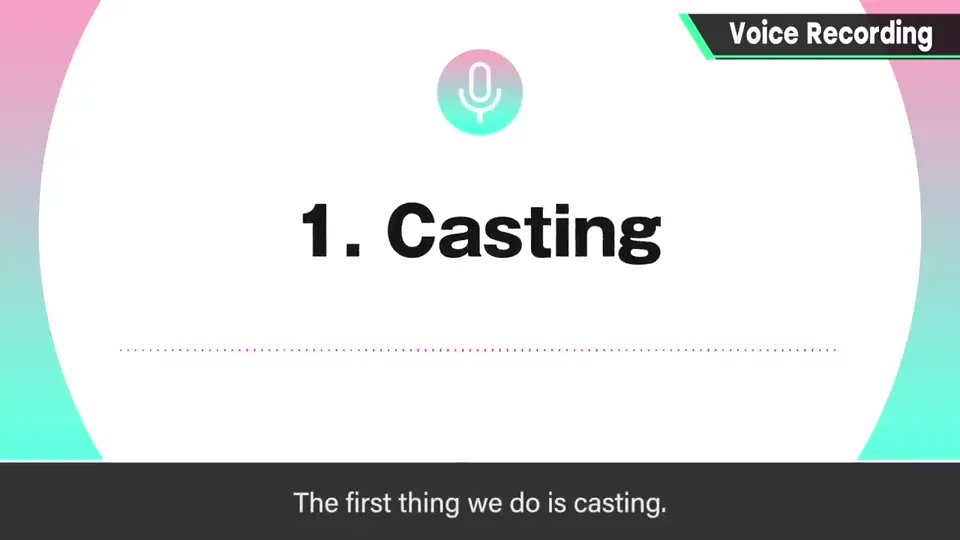
尽量重视贴近原作，但系列新作等换了演员时，也有配合新演员的情况。
3. ② 写台本 1:16
他平常写文件都横排，但为配合一般台本体裁，竖排书写，连「哈」「嗯」这样的词也写成台词。
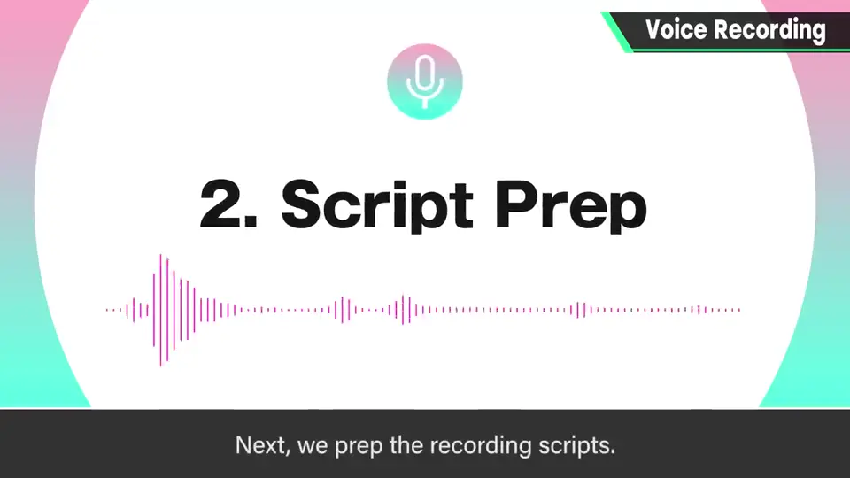
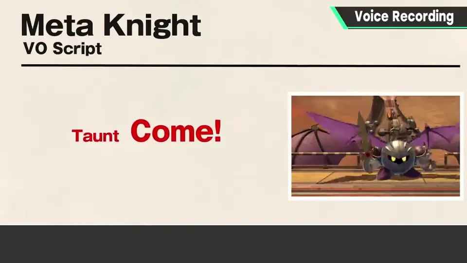
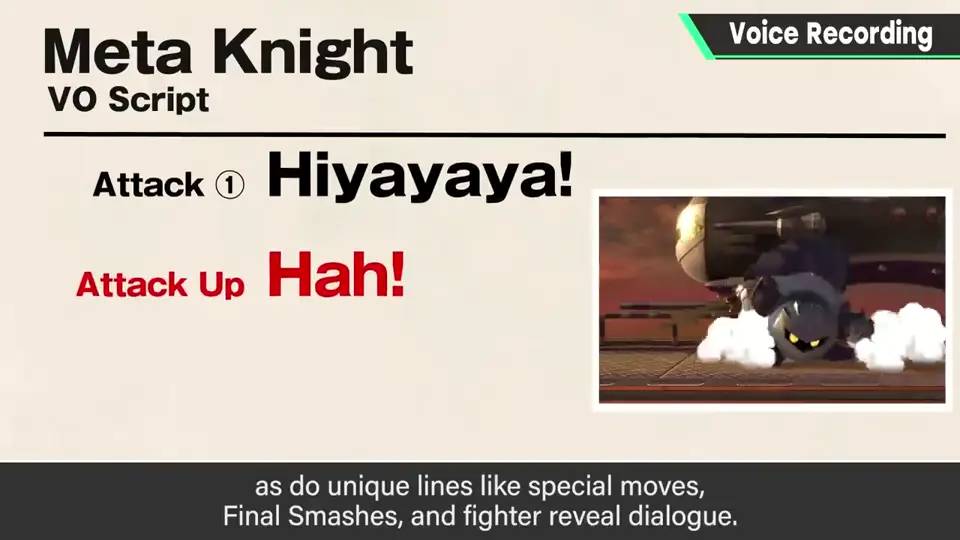
- 攻击、跳跃、受伤等有一定规则的地方套用。
- 必杀技、最终技、参战影片等有特色的地方另录。
- 原作有同样台词时，准备原作参考音源。
4. 台词短、避免撞声 2:00
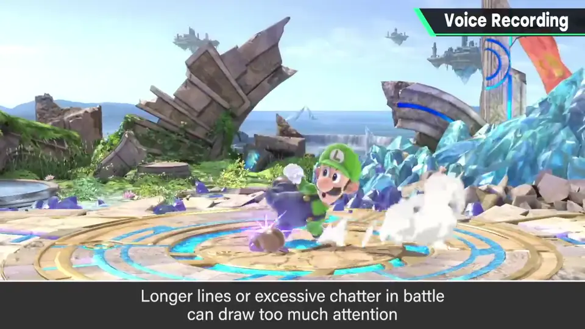
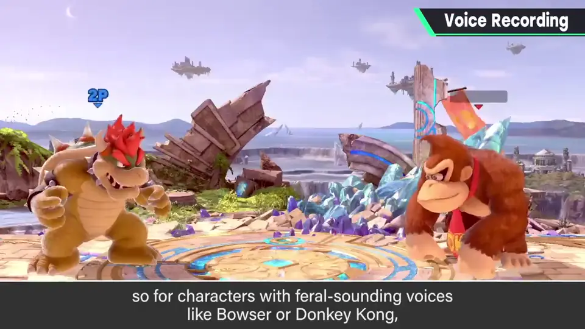
另外他认为声音撞型不好：例如库巴和大金刚的声音保持兽性，也考虑了重复问题。
5. ③ 录音室与 ④ 录音 2:30
排好日程后约录音室：《3DS/Wii U》和《特别版》有万代南梦宫工作室自有的录音室，比较方便，有时也要去别的录音室。
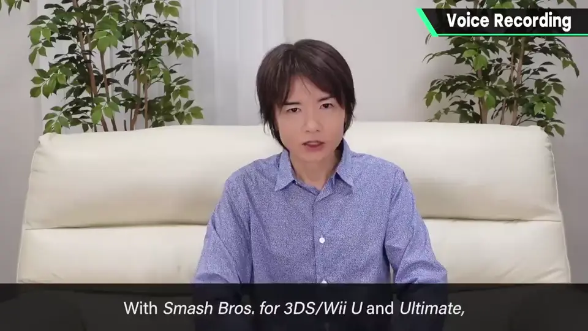
事先向声优简单说明、复认原作中的声音后，请进录音间开始。大部分由他直接用对讲按钮指导，视内容由该系列音响导演监督。
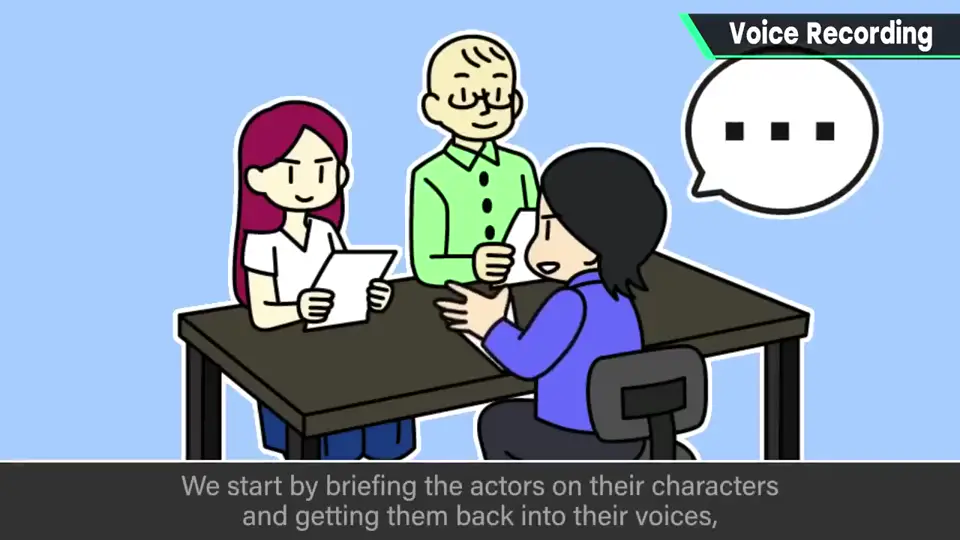
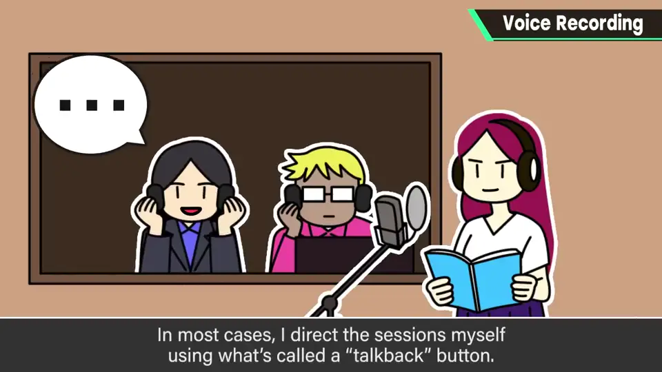
6. 海外语音与录后编辑 3:15
海外语音以日本录制的声音为基础，由 NOA（任天堂美国）和 NOE（任天堂欧洲）主导。宝可梦等各国说的话不同，相当辛苦。
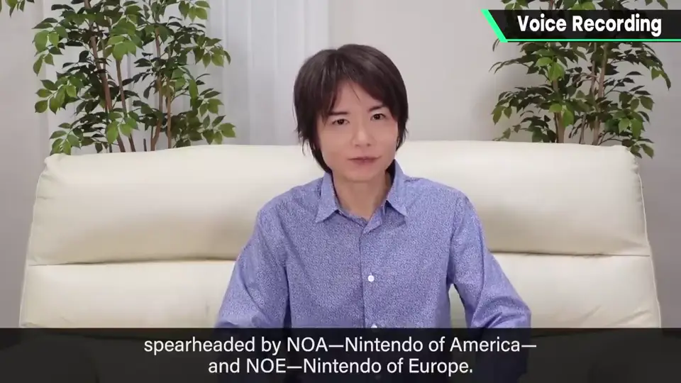
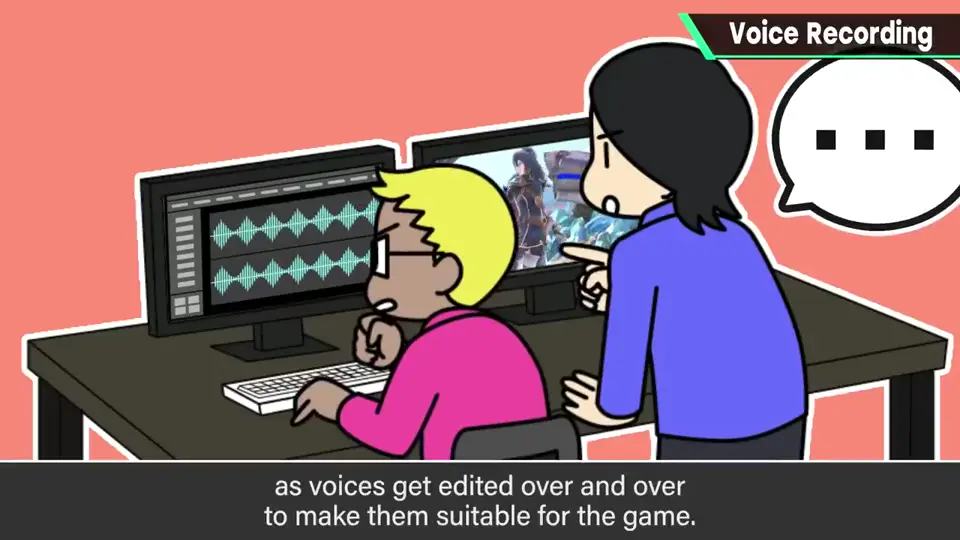
也尽量让搭档一起录，以抓住角色间的默契；但日程合不上而分开录也常有。
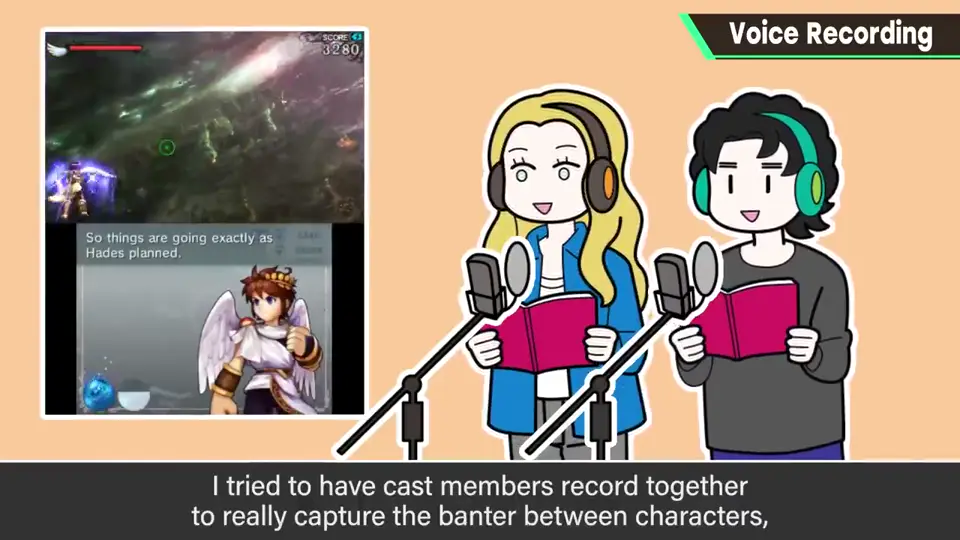
7. 指导的责任 4:07
参与的声优很多，发生过各种事，但大多气氛良好。
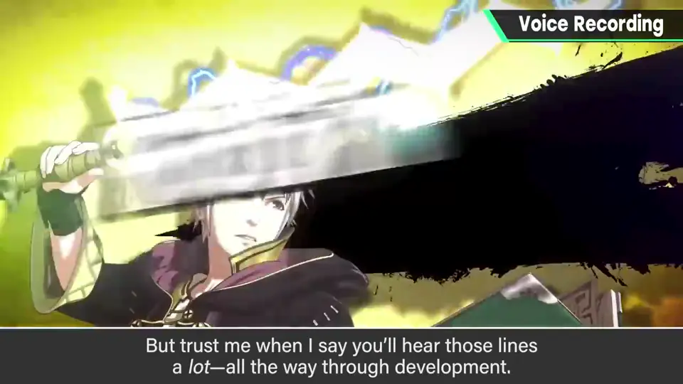
制作中他会一直反复听这些声音，但玩家听得也许比开发者还多——让人感到指导的责任。
自测题
1. 《大乱斗》每个斗士的语音录制大约多长？
约 1 小时，含影片台词也不到 2 小时。 0:30
2. 为什么《大乱斗》台词偏短、频率低？
长台词和频繁说话主张太强，会降低沉浸感。 2:10
3. 海外语音由谁主导？
NOA（任天堂美国）和 NOE（任天堂欧洲），以日本录音为基础。 3:30